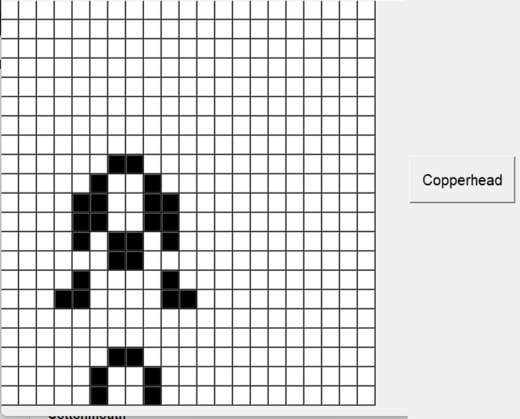

HRA IVOTA

Hra ivota je celulární automat, kterı vymslel britskı matematik John Horton Conway v roce 1970.
Tato hra se hraje sama. Vše co mùete dìlat je zadat pùvodní konfiguraci a sledovat, jak se vyvıjí.
OVLÁDÁNÍ

Kliknutím na bílou(mrtvou) buòku, z ní udìláte èernou(ivou).
Tlaèítko Start spustí vaši hru. Tlaèítko Quit ukonèí aplikaci.
Tlaèítko Clear nastaví všechny buòky na bílou barvu.
Další tlaèítka nastaví nìjakou z pøeddefinovanıch konfigurací pro hru, a to následovnì:



Jsou zde té dva posuvníky. Jeden nastavuje poèet tvoøenıch generací(number of generations)
a druhı poèet bunìk, které se náhodnì vytvoøí jako ivé (number of random alive cells)
Vaše zvolené hodnoty na posuvnících musí bıt potvrezeny talèítky "Save" pod nimi.

PRAVIDLA
Vesmír Hry ivota je dvourozmìrná sí ètvercovıch buòek. Kadá z tìchto buòek mùe bıt ivá nebo mrtvá
Kadá z bunìk interaguje s jejími osmi sousedy. To jsou buòky pøipojeny vertikálnì,horizontálnì, èi diagonálnì
Kadım krokem ve høe nastanou následující situace:
1. Kadá ivá buòka s ménì ne dvìma ivımi sousedy zemøe.
2. Kadá ivá buòka se dvìma nebo tøemi ivımi sousedy zùstává ít
3. Kadá ivá buòka s více ne tøemi ivımi sousedy zemøe.
4. Kadá mrtvá buòka s právì tøemi ivımi sousedy oivne.
První generace je tvoøena aplikací zmínìnıch pravidel pro všechny buòky zároveò.
Zrození i smrti buòek probíhají souèasnì.
Kadá generace je èistì funkcí té pøedchozí.
Pravidla se opakovanì pouívají, aby tvoøila další a další generace.
Vytvoøil: Josef Jehlièka, Jakub Zamazal, Philip Otto, Petr Kareš
Pro: ÈVUT v Praze, Fakulta stavební, Katedra geomatiky, V rámci pøedmìtu Projekt informatika (PJIN)